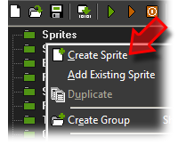
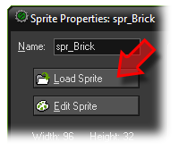
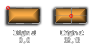
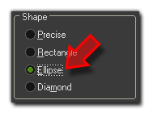

Tutorial
Page 2 of 13
Adding Some Sprites
As mentioned in the introduction, we are going to make a "Breakout" clone, so let's get started making the basic objects that will be used in this game. First we need to have a sprite for
the bricks in the game, so Right Click on the "Sprites" folder of the resource tree and select the first option, Create Sprite.

You should now name your sprite something distinctive so that this resource is obviously a sprite and a brick. I suggest something like "spr_Brick" (pre-fixing resources in this way will help
you later when making large games, as it makes identifying resources in code much easier). Now click on the button marked Load Sprite and browse to the resources folder for this
tutorial (if you are not sure where to find this, you can go to the Help menu and then selecting the menu option Open Project
In Explorer. Once there you should browse to Assets where you should choose one of the "Brick" sprite resources.

There are a number of different properties for a sprite, but for now we are only interested in the Origin. This is the local x and y position that will be used when positioning an instance
with this sprite assigned to it into a game room, kind of like it's anchor point, and it is also used for rotation and scaling of the sprite as well as many other features. For now, we just want it to
be centered on the brick, so click on the button marked Center and you will see that the origin crosshairs on the sprite image will now move to the center.

That's our brick sprite done, so let's now create our player bat sprite, but we'll do this in a slightly different way so you can see another of the options that GameMaker presents you with for
importing assets. Below this text you will see the sprite that we are going to use for this game. Just click on it and then drag it onto the main interface area for GameMaker and let it drop.
As you can see a dialogue opens and asks you what type of resource this is (you should choose Sprite) and then creates the new sprite. In this way you can create sprites and backgrounds
quickly and easily from any graphics resource by simply dragging them into the GameMaker window. Now, this new sprite should be named, as before, with a distinctive name ("spr_Bat" for
example) and the origin should be set to the center.
Do the same now for the following two sprites, with the first one being a wall object, and the second one being the ball:
Name them as you wish (remember to use some convention to identify them later) and close the wall sprite as we need do no more with that for now. However with the ball sprite we must do two more
things.
The first thing you should do is set the sprite origin to the center and then, second, you should go to the section marked Collision Checking and click on the button marked Modify Mask.
Here we will modify the sprite collision mask (the area of the sprite that GameMaker uses to detect collisions) so that it is an ellipse that only covers the ball itself. To do that, simply click
on the button marked Ellipse in the Shape section and the mask will be set for you.

For more information on masks and their properties, consult the Advanced Use - More About Sprites section of the manual. Close the mask properties and the sprite, then save your game before
going on to the next section of the tutorial.
Click on the Next button to go to the next page of the tutorial.